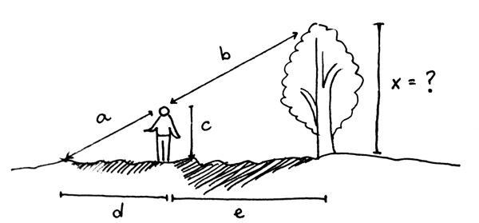

Alex is standing so that his(1) shadow, d feet long, is perfectly matched to the top of the tree's shadow (which is d + e feet long).
Alex is lucky and has a friend measure all the distances listed (and two others, ab and de).
Which three of the following variables are needed to find x?